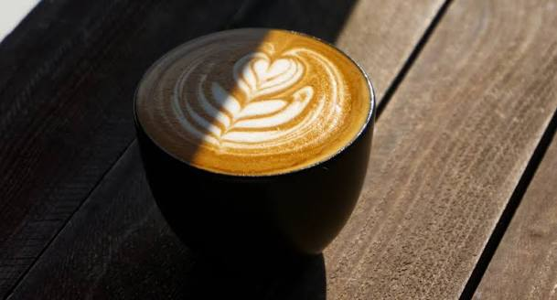

Being an Starbucks partner it is easy to choose my favorite drinks to order. My personal favorite beverages are Brown sugar shaken espresso and the Iced London Fog Latte with sugar free Vanilla instead of regular Vanilla and oatmilk.